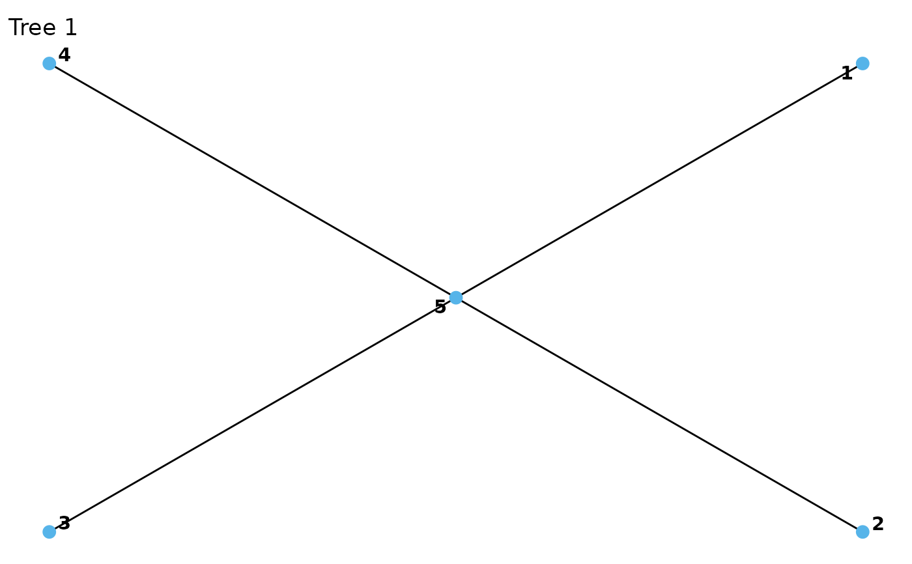
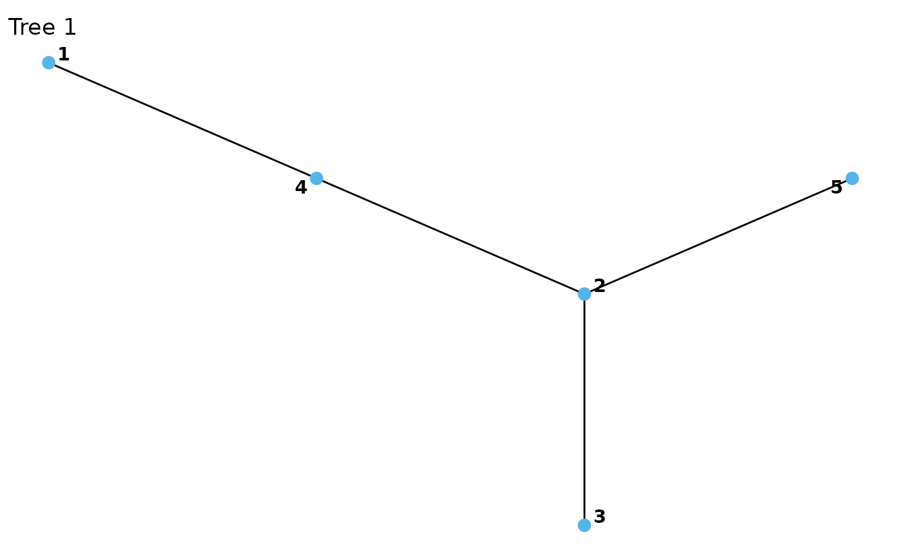

Plot one or all trees of an R-vine structure.
Arguments
- x
an
rvine_structureorrvine_matrixobject.- ...
passed to
plot.vinecop_dist().
Examples
plot(cvine_structure(1:5))

plot(rvine_structure_sim(5))
mat <- rbind(c(1, 1, 1), c(2, 2, 0), c(3, 0, 0))
plot(rvine_matrix(mat))
plot(rvine_matrix_sim(5))
